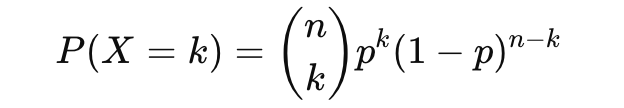
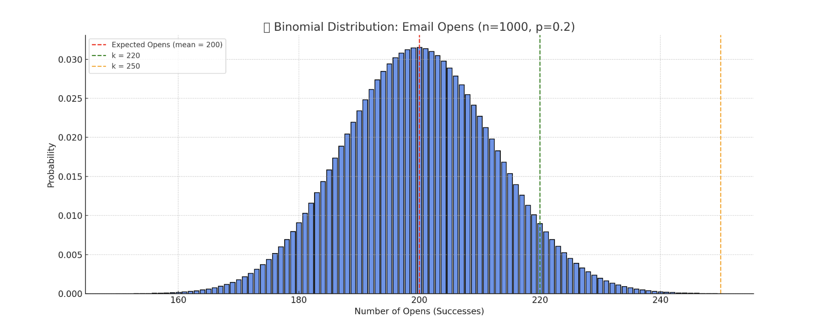
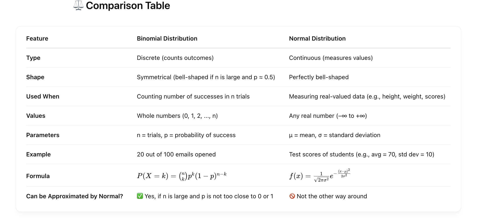
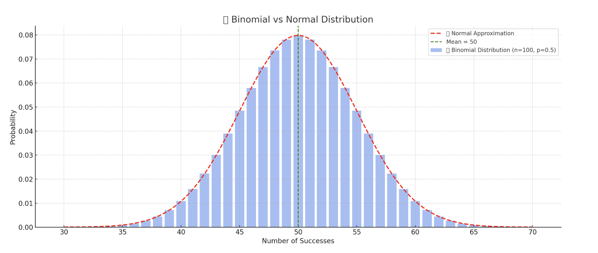
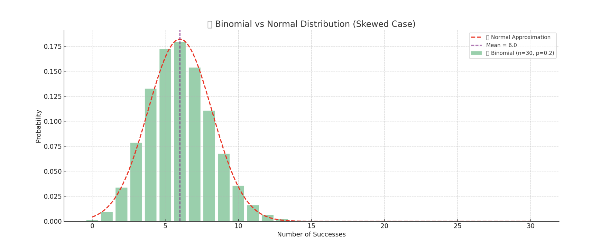
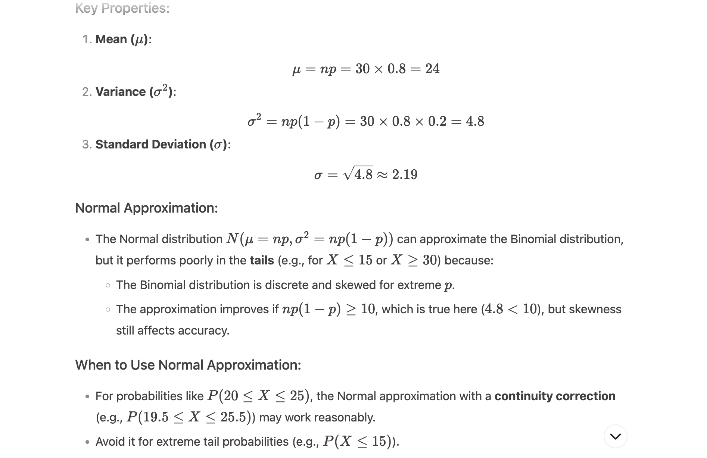
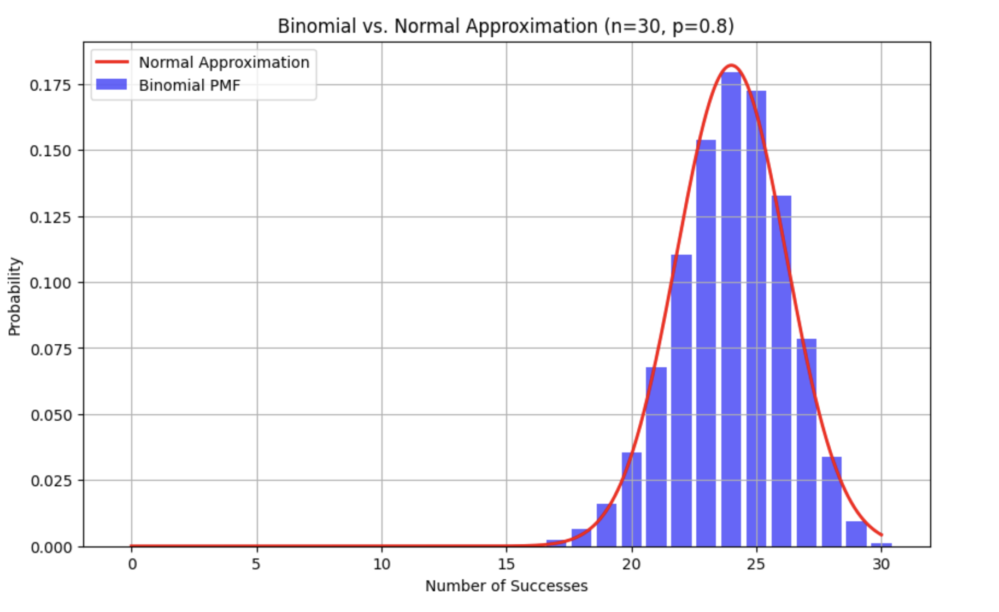

📦 What is Binomial Distribution?#
A Binomial Distribution is a discrete probability distribution that models the number of successes in a fixed number of independent trials, each with the same probability of success.
It describes the outcome of binary scenarios, e.g. toss of a coin, it will either be head or tails.
It has three parameters:
n - number of trials.
p - probability of occurence of each trial (e.g. for toss of a coin 0.5 each).
q or 1−p - Probability of failure on a single trial
X - Random variable: number of successes in n trials
P(X = k) - Probability of getting exactly k successes
🧮 Binomial Formula:#

n - (k) is the combination (n choose k)
k
- p : probability of k successes
n-k- (1 - p) : probability of (n−k) failures
✅ Real-Time Example: Email Campaign Success#
Scenario: You’re a marketing manager sending emails to 1000 customers. Based on historical data, you know that 20% (p=0.2) of people open your email.
Let’s calculate and understand: - What is the probability that exactly 220 people open the email? - What’s the expected number of opens? - What’s the standard deviation?
🧮 Parameters:#
- n = 1000 (emails sent)
- p = 0.2 (open rate)
- k = 220 (interested in exactly 220 opens)
📊 Real-Time Insights You Can Get:#
Question Answer Type
How many people will likely open the email? Expected value = n × p = 200
How spread out will the results be? Standard deviation = √(np(1−p)) ≈ 12.65
What’s the chance of getting 220 opens? Use binomial PMF
What if I want at least 250 opens? Use cumulative probability
🔧 Use in Business:#
- 📈 A/B Testing: Measure how many users click CTA button A vs. button B
- 💌 Email Campaigns: Predict open/click rates
- 🎯 Conversion Analysis: Predict success of lead conversions in sales funnels
- 🧪 Quality Control: How many defective items in a batch of products

Here’s the Binomial Distribution plot for your email campaign:
-
✅ Mean (Expected Opens) = 200 (red line)
-
📍 Highlighted
k = 220(green line): you can see the probability of getting exactly 220 opens -
⚠️
k = 250(orange line): very low probability — it's at the edge of the distribution
🔍 Interpretation:#
-
Most of your email open counts will hover around 200, with some fluctuation.
-
Getting 250+ opens is rare.
-
You can use this to forecast campaign performance, set realistic KPIs, or run A/B tests confidently.
Want to calculate exact probability values like:
- 📊 P(X = 220) (exactly 220 opens)
- 📈 P(X ≥ 250) (at least 250 opens)
Difference Between Normal and Binomial Distribution#

📌 Real-World Examples#
🔹 Binomial:#
- Tossing a coin 10 times and counting heads.
- Counting how many customers clicked an ad (click or no-click).
- Number of defective items in a batch of 50.
🔹 Normal:#
- Height of 10,000 people.
- Temperature over a year in a city.
- Blood pressure measurements.

Here's the visual comparison between the Binomial Distribution (blue bars) and its Normal approximation (red dashed curve):
- Blue bars: Exact probabilities from the Binomial Distribution (n = 100, p = 0.5)
-
Red dashed line: Normal Distribution approximation using the same mean (50) and standard deviation
-
As n increases, the Binomial Distribution starts looking more like a Normal Distribution
-
This is why we often use the Normal Approximation when working with large n, especially for quick calculations

Here's the visual for the skewed case:
📊 Binomial (n=30, p=0.2) vs 🔔 Normal Approximation#
🔍 Key Takeaways:#
-
The Binomial Distribution is right-skewed because the probability of success p = 0.2 is low.
-
The Normal Approximation (red dashed line) doesn't match the binomial well — especially in the tails.
-
This shows that Normal Approximation is not reliable when:
- n is small
- p is far from 0.5
Binomial Distribution with p=0.8 and n=30#
The Binomial Distribution with parameters n = 30 and p = 0.8 s indeed left-skewed because the probability of success is high.causing most outcomes to cluster toward the upper end (near np = 24 ).

import numpy as np
import matplotlib.pyplot as plt
from scipy.stats import binom, norm
n, p = 30, 0.8
x = np.arange(0, n+1)
mu = n * p
sigma = np.sqrt(n * p * (1 - p))
# Binomial PMF
binomial_pmf = binom.pmf(x, n, p)
# Normal PDF (for approximation)
x_cont = np.linspace(0, n, 1000)
normal_pdf = norm.pdf(x_cont, mu, sigma)
# Plot
plt.figure(figsize=(10, 6))
plt.bar(x, binomial_pmf, color='blue', alpha=0.6, label='Binomial PMF')
plt.plot(x_cont, normal_pdf, 'r-', lw=2, label='Normal Approximation')
plt.title(f'Binomial vs. Normal Approximation (n={n}, p={p})')
plt.xlabel('Number of Successes')
plt.ylabel('Probability')
plt.legend()
plt.grid(True)
plt.show()

Output Interpretation: - The plot will show a left-skewed Binomial distribution with a peak near 24. - The Normal curve will roughly match the center but deviate in the left tail (X < 20)
Exact vs. Approximate Probabilities:
For example, to compute P(X≤20):
- Exact (Binomial):
from scipy.stats import binom
print(binom.cdf(20, n=30, p=0.8)) # Output: ~0.061 (6.1%)
- Normal Approximation (with continuity correction):
from scipy.stats import norm
print(norm.cdf(20.5, loc=mu, scale=sigma)) # Output: ~0.085 (8.5%)
The Normal approximation overestimates the tail probability due to skewness.